2.72 Elements of Machine Design Personal Portfolio
Introduction
For the class, we are tasked with designing, modelling, fabricating, and assembling a precision benchtop lathe that can cut 12L14 steel to within 50 microns precision, can survive being dropped from 1.5m without failure of a critical component, and can avoid failure when being hit with a hammer. Beyond these requirements we were given free rein to design our functional requirements (FRs) however best suited our "customer". This customer for our group was a materials testing facility that needed to produce one standard sample to ASTM E8 standards in less than 15 minutes. We developed lathe level FRs. These include FRs for accuracy, portability, maximum part size, cost, power, safety, material removal rate, noise output, safety, maintenance intervals, stiffness, efficiency, and cutting forces. With these lathe FRs, we derived subsystem-level FRs for the spindle, cross slide, z drive, and CNC.
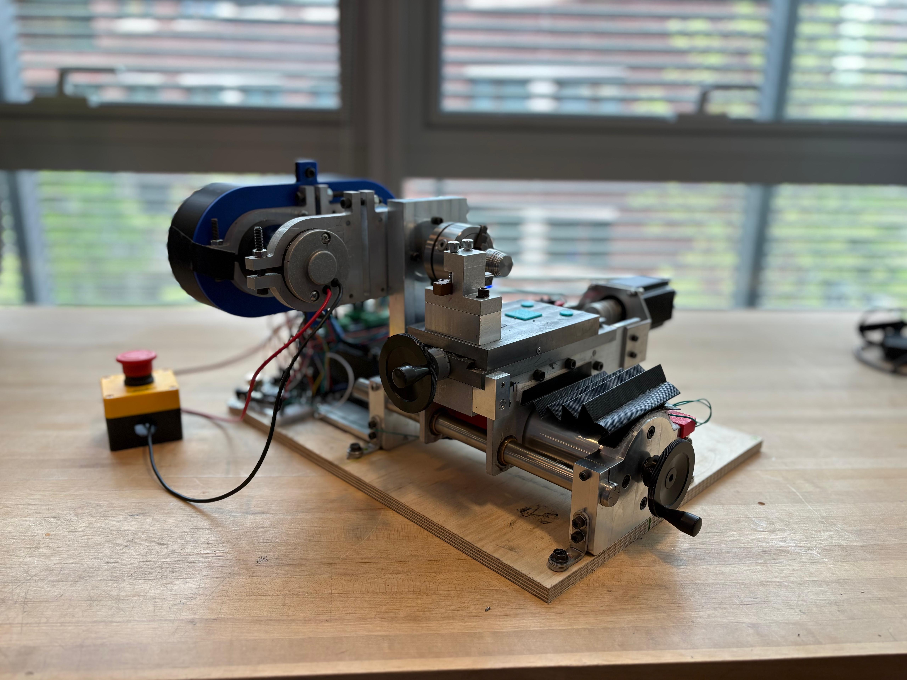
Figure 1. Finished lathe.
I was involved in the development of most lathe level and sub system FRs (as were most of the team). From the core set of customer requirements of; cutting 12L14 steel to ASTM E8 standards, 50 microns precision, surviving a drop from 1.5m, CNC capability, and piece turn around time of 15 minutes we derived 26 full lathe FRs. Several of these FRs are worth discussing in a bit more detail as they are quite interesting and capture our design process for translating these customer requirements in FRs. For example, the material removal rate FR of 1426 millimeters cubed per minute was derived from the customers operational turn over requirement. If the lab needs to produce 1 sample every 15 minutes, then they have about 10 minutes of cutting time to do so. Turning down a 20mm diameter blank to 12.5mm over a 75mm length requires removing approximately 14358 millimeters cubed of material. This then gives us our desired material removal rate when divided by the 10 minutes.
Another interesting FR was the error budget allocated to each system based on the 50 micron overall requirement. Note that as this is a precision requirement, this only refers to non-repeatable error, as repeatable error can be removed through careful machining. These values were derived by taking simple stiffness assumptions for each of the sub systems (we assumed that they were dominated by the least stiff component in the subsystem), then we used free-body diagrams (FBDs) to find the force through that system. Then we could work out an allowable precision for each subsystem and then we scaled the predicted precision for each subsystem proportionally to fulfill the full error budget. This was repeated in each axis.
Spindle
The first part of the lathe to be designed was the spindle. Our spindle is constrained by two angular contact bearings. The leftmost bearing is slip-fit to the shaft and the rightmost bearing is press-fit to prevent over-constraint and allow for axial thermal expansion. The bearings are preloaded by a Belleville washer stack and a nut that has been fixed in place with Loctite. Critical design considerations of the spindle included, thermal run away, bearing preload (to provide adequate stiffness without increasing friction too much), and avoiding over constraint.
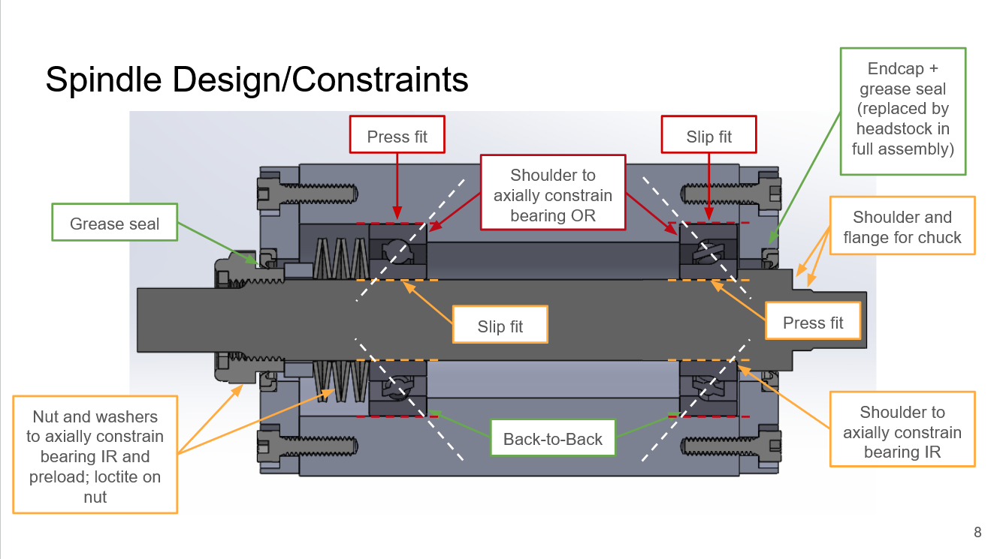
Figure 2. Spindle layout and design.
Fatigue is an important design factor to consider avoiding spindle failure. To calculate this, I created a free body diagram (FBD) of the spindle (see Figure 3). Then, using the FBD I calculated the location of the maximum bending moment and thus the largest axial stress. I then used the Marin factor method to adjust the endurance limit for 12L14 steel (the material of our shaft) to calculate a revised endurance limit (see Figure 4). This method adjusts the idealised laboratory endurance limit down to reflect real world conditions. Using this method I adjusted the endurance limit of the steel for the fabrication method (machined finish), the size factor (larger materials have more potential internal defects), the mode in which stress is being applied, the temperature (high temperatures reduce endurance), the reliability (95% reliability, the same as the bearings), and stress concentration factors (fillet radii). I found that the endurance limit of the shaft was ~63% greater than the maximum load and thus it will not fail in fatigue.
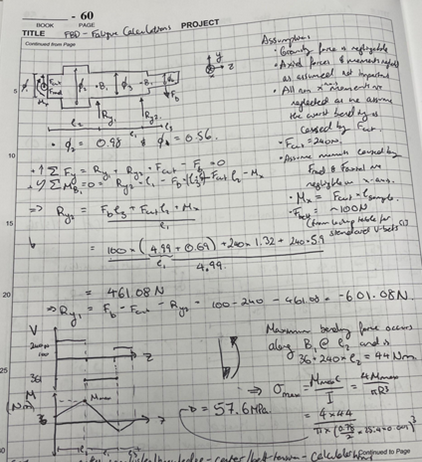
Figure 3. Spindle FBD for fatigue and bending calculations.
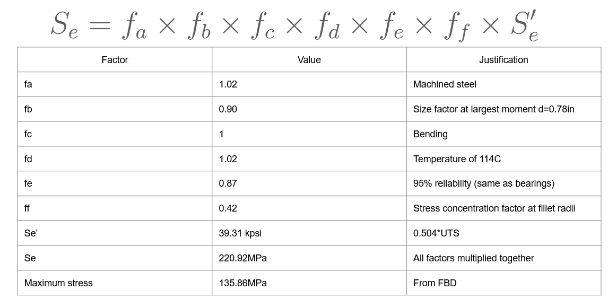
Figure 4. Marin factor method for adjusting the endurance limit of 12L14 steel.
These calculations assisted in determining dimensions as if we increased the lever arm for the applied forces, the maximum moment would increase significantly, and we would start being concerned about fatigue failure. Additionally, changing the bearing locations was also driven by this as changing their locations also changed the respective lever arms.
For spindle measurement, I was the team lead. This involved creating a plan to measure all our FRs, which we met. One notable experiment we ran was the run-out measurement. During progress review 1, it was brought to our attention that we hadn't used the proper runout measurement technique (see Figure 5). In this set-up we are measuring both the spindle runout and concentricity of the shaft. To correct this, we re-measured run out using the Donaldson and Estler face motion reversal techniques. The Donaldson technique required the use of two dial indicators diametrically opposite on the shaft to measure the run out and subtract concentricity errors. The Estler technique is an extension of Donaldson for measuring the axial run out and involves three dial indicators. This lowered our runout from an average of 14.6 microns to 1.5 microns. This run-out is far below our FRs and allowed us to redistribute our error budget elsewhere in the lathe design.

Figure 5. Incorrect run out measurement technique. Note the single dial indicator being used.
I also measured the run out on a dowel pin mounted in the provided three jaw chuck using the Donaldson method, getting a run out value of 4.5 thou (much greater than allowable to meet our precision specification). Thus, to remove this issue we evaluated and ordered a new 4-jaw chuck to allow the user to dial in their workpiece and achieve far higher precision. Note here that our user is not especially time constrained and as such is able to accommodate the extra time required for the use of a 4-jaw chuck to achieve higher precision.
Cross Slide
The second part of the lathe to be constructed was the cross slide. The cross slide consists of a tool post mounted to a sliding dovetail which is driven by a lead screw. The lead screw provides precise actuation but is subject to wear from sliding contact under axial load. For constraint design (which I was involved with) we constrained the left-hand side ½ axially (with needle bearings) and radially (with flanged bushings) and constrained on the right-hand side ½ axially. Preload was provided to the bearings with a nut and spring washer combination. This design was initially over-constrained as the lead screw nut provides an additional radial constraint and we had an additional bushing on the right-hand side. This led to bowing of the lead screw and significantly increased the hand force required to turn the lead screw. This was corrected following progress review 2 with the removal of the right-hand side radial constraint. My contributions to the cross slide also included lead screw force and wear modelling.
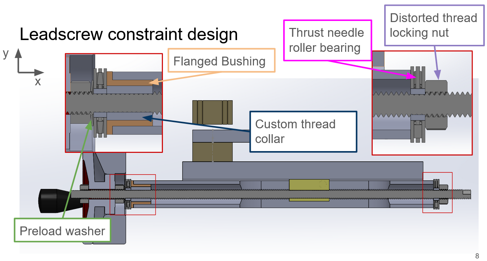
Figure 6. Lead screw constraint design.
For the lead screw force modelling, first as always, we created a free-body diagram (FBD) to work out the requisite forces. Noting that as designed the lead screw takes all the axial load during cutting. The axial force is found trivially as all the axial force travels through the lead screw. The radial force is calculated by considering the stiffnesses of the dovetail, bushing and lead screw acting in parallel and calculating the expected total deflection. Then from this you can calculate the deflection in the lead screw and hence the radial force experienced (see Figure 8). This force is much, much smaller (2 N) than the axial force.
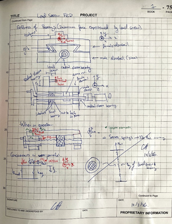
Figure 7. FBD of cross slide to determine radial forces in the lead screw.
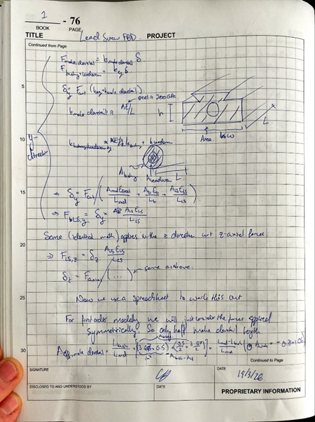
Figure 8. Using a simplified spring model, we determine the radial force in the lead screw.
Using these axial and radial forces, one can then calculate the von Mises stresses experienced by the lead screw and hence whether the lead screw will fail in tension. We work out the axial stress by taking the axial load and dividing by the root area. Then we calculate the torsional stress by calculating the torque required to rotate the lead screw. The load torque is calculated by calculating the torque required to rotate along the thrust bearing and adding this to the torque required to rotate the screw. These can then be used to calculate the von Mises stress. The resulting von Mises stress was calculated to be ~35MPa, far below the ~400MPa allowable stress. However, I acknowledge that lead screw wear remains a long-term consideration and can lead to backlash over time. However, regular maintenance of the lead screw nut preload and lead screw lubrication can minimize this and are highly recommended.
Then using the FBD in Figure 7 we can also work out the working load on the flanged bushing and thus what bushing is suitable. The main consideration for choosing the bushing is whether the PV value is exceeded. A PV value represents pressure times velocity and is a proxy for the heat generation per unit area and the PV rating of a sliding bearing is the value above which the bearing will not dissipate heat fast enough and this leads to softening of the material and/or thermal expansion which will cause the shaft to seize. For our application with radial loads on the order of 2 N and speeds on the order of ~160 RPM almost any oil embedded bronze sliding bearings will be suitable as they are all rated for around 120RPM and loads of at least 125lbs (556N). They are also very cheap (<$3). Hence, almost all bearings were found to be suitable.
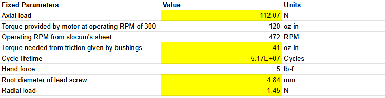
Figure 9. Parameters for choosing flanged bushing for cross slide.

Figure 10. Critical lead screw force calculations.
During testing, I observed that rather than the flat washer sliding against the flanged bushing as intended, the Belleville washers were rotating against the flat washers. This is bad because spring washers are not designed to be a sliding surface and under the preload applied to the lead screw this would cause unacceptable wear and failure of these washers. This was observed because the bronze surface didn't have a sufficiently low coefficient of static friction to allow a washer to rotate on it, so no matter what we tried the Belleville washers always rotated. To counteract this, we chose needle roller bearings (see Figure 6) which ensure that rubbing of this nature doesn't occur.
Additionally, to achieve our precision FR the provided handle did not provide adequate resolution (50 ticks). We needed double that (100 ticks) to provide us with 0.5 thou resolution that we required. To do this, I created a simple addition to the handle which provided both the higher resolution and acted as a seal for the roller bearings.
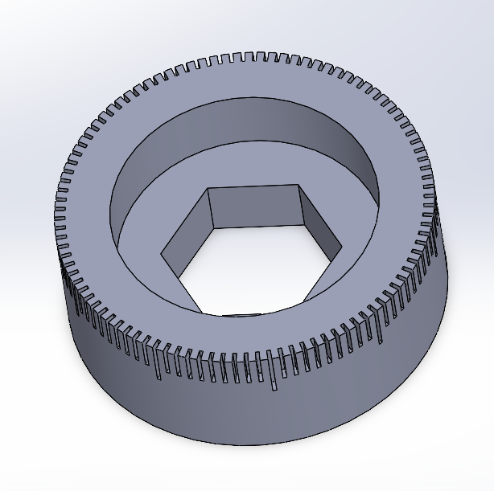
Figure 11. New indicator wheel CAD.
A cross slide HTM (homogeneous transformation matrix — a mathematical tool for tracking how small errors at each joint stack up at the tool tip) was something I also created for modelling the cross slide. It was designed to capture changes in the tool tip position due to axial loading of the lead screw, lead screw misalignment, thermal expansion of the lead screw, bending of the tool post, and deflection of the tool tip. Effects such as deflection of the dovetail were neglected using order of magnitude (OOM) estimates.
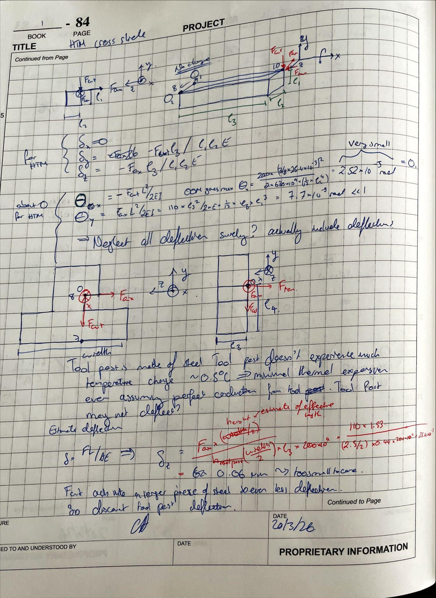
Figure 12. HTM of tool post and tool.
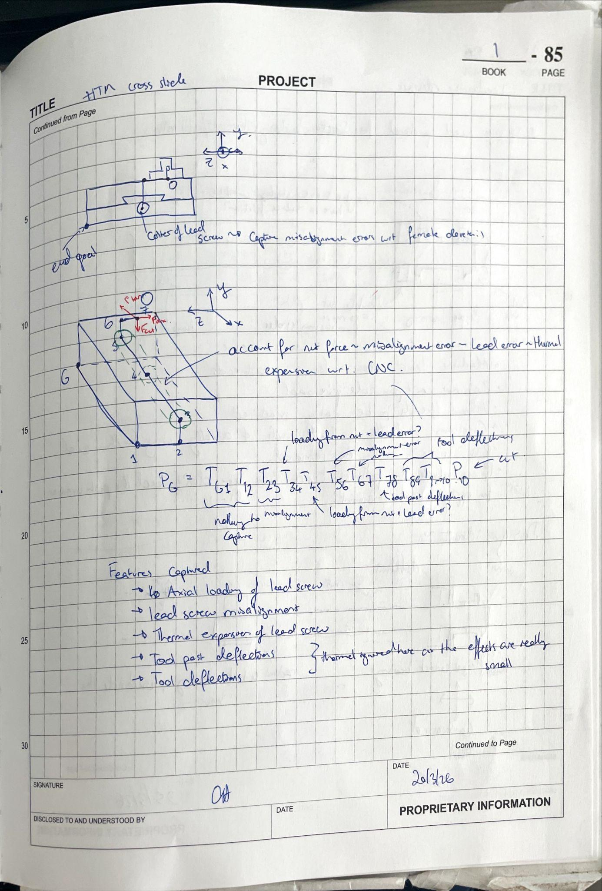
Figure 13. HTM of dovetail and lead screw.
I also did bolted joint calculations on bolts for the CNC motor mount and the side skirts. This was done using the bolted joint calculator that our team developed. This calculator uses the bolt geometry, material properties and loading conditions and checks joint stiffness, required preload, load capacity in tension, and load capacity in shear. As these bolts are only resisting shear loads, a simple first order model taking the overall shear force acting on that surface and dividing by the number of bolts gives shear stresses that are 2 orders of magnitude lower than the yield stress of the bolts.
Z Drive
For the z drive a similar constraint layout was chosen to that of the cross slide, except radial constraints were added to both ends of the tube stock as the dancing queen removed the radial constraint provided by the lead screw nut.
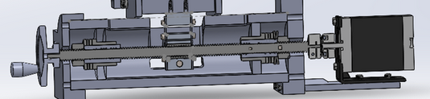
Figure 14. Z drive assembly CAD cross section view.
For this sub assembly, my role was to design the tail stock modifications, carriage rail flexure, side skirts (in part), and do bolted joint calculations for the CNC motor mounts and the side skirts. Starting with the tail stock modifications. I created the CAD and completed the machining for this part (see Figure 15). In terms of machining, the processes that were involved were; widening the central pocket to accommodate the tube stock, drilling and milling side pockets for the guide rods, cutting slits for the guide rod holes to allow for tightening, drilling and milling bolt holes to tighten the clamps on the guide rods and to fasten the L brackets to them. This piece also underwent GD&T (see Figure 15). For the GD&T, we specified locations of guide rod holes and the central pocket to within 2 thou of the nominal location. This was specified as these dimensions determine the alignment of the tube stock and the guide rods which are critical structural elements. Tight tolerances were also specified for critical diameters, such as the tub stock pocket and the guide rod holes. This was because if these were oversized it would lead to significant misalignment and that would eat into the error budget that our potting was aiming to correct.
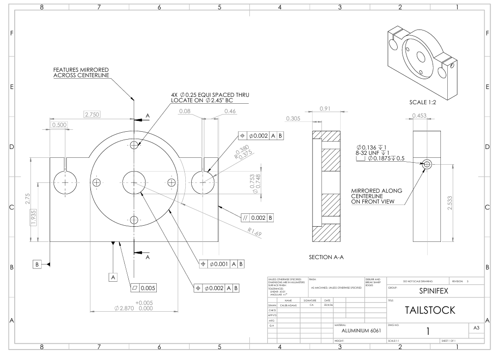
Figure 15. Tail stock GD&T.
On a side note, looking at Figure 1 we can see that the lathe is held to the base plate via 4 aluminium 6061 L brackets. These were designed, waterjetted and sheet metal bent by me to hold the lathe to the base plate and withstand the dropping and cutting forces that the lathe will experience.
Carriage Rail Flexure
Now, regarding carriage rail flexure (CRF), this machine element is designed to provide exact constraint (meaning each degree of freedom is controlled by exactly one constraint, with no redundancy) to the carriage which is connected to the guide rods via 5 degrees of freedom (4 of which are handled by the side skirts). Hence, only theta z is constrained by the CRF, and as such, it needs to be designed to be stiff in the y-direction to constrain this degree of freedom and must be compliant or unconstrained by all others to prevent over-constraint. There is a design target y-direction stiffness of 10 N/micron derived from allowable angular deflection of the tool post. Starting from the FBD of the full carriage I related the cutting forces to the loads experienced by the CRF (see Figure 16). The beam itself was modelled as a Timoshenko beam with fixed-guided constraints. We then estimated the stiffness of the full stack of CRF, bronze bushing, epoxy, and guide rod to get system stiffness and then tuned the width of the CRF to achieve the desired system stiffness. The CRF length was determined by the geometry of the guide rod location and the carriage height. To choose the bushing for the CRF, we used the derived load alongside the series stiffness model to determine the force seen in the bushing (~25 lb-f) and the speed at which it was expected to move based on the CNC movement speed (1.33 ft/min). This then gave us a PV value which we compared with the PV values for the following linear sliding bushing types; self-aligning aluminium, fixed alignment stainless steel, fixed alignment aluminium, and bronze sleeve bearing. All of these had PV ratings below the operating values, hence we chose option 4, the bronze sleeve bushing as it was the cheapest.
Now to check the designed flexure, we ran first order buckling and fatigue life calculations. Using Euler beam buckling with the worst possible fixed-fixed end constraints, we are orders of magnitude away from buckling. With regards to fatigue, our operating stresses are around ~10MPa, which is so low that fatigue, even for aluminium, is not a consideration.
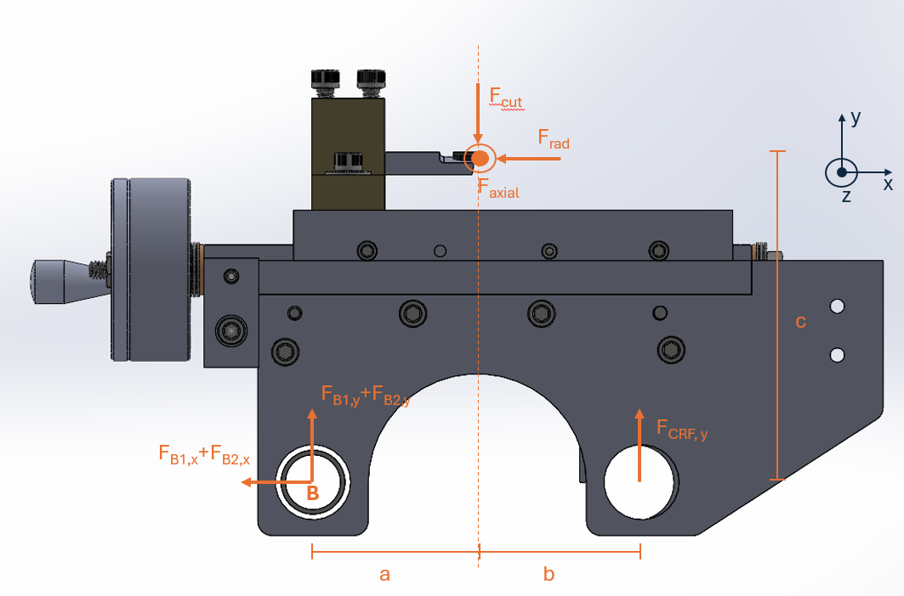
Figure 16. Y-X plane FBD of the carriage.
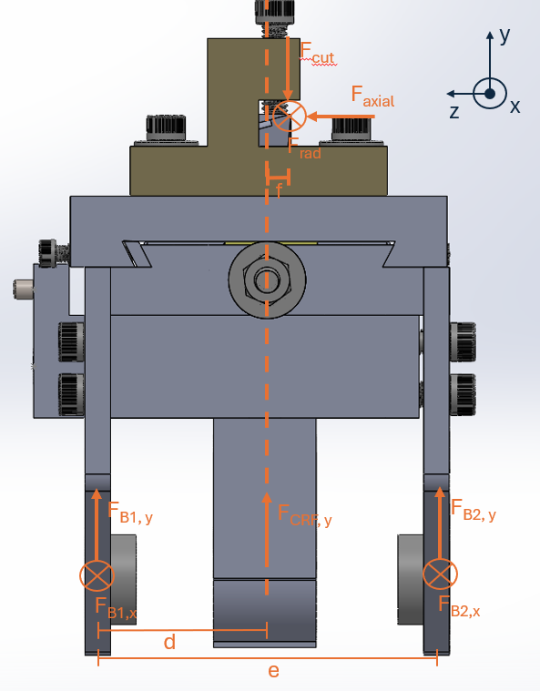
Figure 17. Y-Z plane FBD of the carriage.
To further help the selection of the final flexure dimensions, I generated a MATLAB model sweeping flexure width and length across the feasible design space, plotting three outputs: peak von Mises stress, axial stiffness in y, and transverse stiffness in x. The resulting plots, shown in Figure 18 under worst-case cutting conditions (feed of 0.30 mm/rev, depth of cut of 2.0 mm, tool overhang of 51 mm), allow the trade-off between stiffness and fatigue life to be compared. On the stress plot, the dashed black line marks the yield stress and the red contour marks the fatigue stress. Any design to the left of the red line is deemed unsafe for our application. The nominal design point is to the right of both failure boundaries, confirming adequate fatigue margin, while the stiffness plots confirm that the y-direction stiffness is comfortably above the 10 N/µm design target at the nominal point. A key observation from this study is that stiffness is dominated by width, while length has relatively little influence over the feasible range, this informed the decision to vary width as the primary variable while keeping length within geometry constraints.

Figure 18. Parametric model for the CRF. The nominal operating condition is the final design that we used for our CRF.
To verify this modelling, a SolidWorks FEA was conducted to determine the deflection and stress distribution throughout the CRF during operation. The FEA showed that for our given 2.5 mm width, we have a maximum stress of 60MPa (maximum). This is the worst case and is significantly higher than the operating load for the fatigue calculations. It is also below the yield stress of the aluminium, so yielding failure is also not a consideration.
After modelling the CRF, I also machined this. The process was as follows, waterjet the outline (after calibrating the waterjet), drill and tap two holes on the top face for mounting to the carriage and then bandsaw off the frame. Several issues came up during this process. Firstly, the waterjet overcut the fillet on the first iteration (even after calibration, see Figure 19). Moreover, after that first cut, I realised that for ease of water jetting I should increase the thickness of the cylindrical part. After the piece was waterjet properly, whilst clamping in the vice, the CRF frame broke. This frame's purpose was to allow me to clamp the piece in the vise without damaging the flexure. Without this I found another way to clamp it in the vise, by gripping only the thicker top part of the front face.
After it was manufactured, the CRF was put to the test in the death cut in progress review 3 (maximum expected cutting forces). The CRF didn't fail during this test and hasn't failed during drop testing nor any subsequent testing, hence is expected to meet all FRs in ongoing operations.
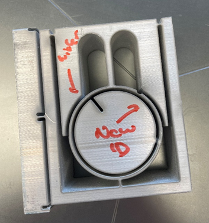
Figure 19. Failed waterjet attempt on the CRF.
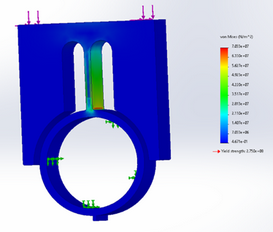
Figure 20. SolidWorks FEA shows maximum stress at fillet of ~70MPa.
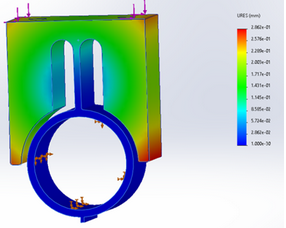
Figure 21. SolidWorks FEA shows maximum deflection of 0.3mm.
Finally, for the side skirt CAD and process plan, I was involved in helping Niki create the CAD for this based on measurements we had taken. Additionally, I needed to modify the side skirt geometry to allow us to mount the CNC motor to the cross slide, which I did by increasing the length of the side skirt and adding two additional bolt holes to each side skirt. This meant that I had to water jet custom motor mounts to our specifications, which I did out of ⅛ in thick aluminium 6061.
Powertrain
The power train for our system consists of a round belt and pulley system covered by a safety shield belt with air vents. My part of this was the CAD, design, modelling and fabrication of the belt safety shield. This was designed to protect the user if the belt broke during operation and protect anyone/anything from contacting the belt during high-speed operations. The two main design considerations were shock resistance and cooling. Shock loading from the drop test requirement and motor heat during continuous operation were the governing failure modes for this component. For the shock resistance, I determined a minimum allowable wall thickness based on the amount of energy the shield could absorb before failure if the lathe was dropped onto it. For cooling of the belt and pulley the air vent hole size was determined by the estimated temperature gradient, heat production, and the estimated air flow rate through the vents. As this piece is a non-critical element (e.g. if it fails you can print another one at next to no cost) it was fabricated by PLA 3-D printing.
CNC
Our CNC system consists of 2 Nema 23 2.4Nm stepper motors which drive their respective lead screws through a double diaphragm coupler. They are powered by off-the-shelf software (GRBL), power supplies, drivers, and controllers (Arduino Uno). For this system I completed the component selection for almost all components, derived a first pass on all the CNC FRs, modelled the torque requirements for the motors and designed and fabricated the cross-slide CNC motor mounts.
For the motor selection process, their driving requirement was torque at a given RPM. To determine the required torque, we considered the torque required to achieve the desired angular acceleration of the lead screw, the desired linear acceleration of the carriage and/or dovetail, and the rotational inertia of the coupling and the motor ~0.6 Nm (see Figure 22). Then from there we had the desired RPM derived from the material removal rate lathe level FR (~160RPM both axes). From this I looked at manufacturers specification sheets and found a reasonably priced and relatively easy to ship (US based supplier) motor that could provide the required torque at the desired RPM.
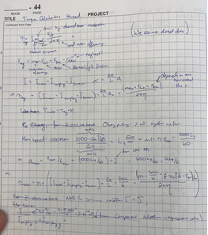
Figure 22a. Torque calculations for both motors (page 1).
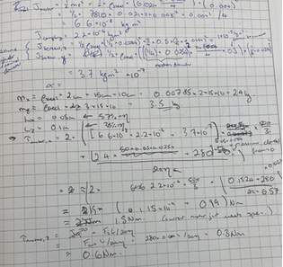
Figure 22b. Torque calculations for both motors (page 2).
The CNC motor mounts were really fun to make. This one involved minimal calculation, I just needed to make sure that Al5052 at 1/8" in thickness would be able to hold the weight of the motor without fatigue failure. The resulting shear load is ~2 MPa, which is far below anything that would cause fatigue. The CAD was created and the shape shown in Figure 23 was cut on the waterjet. Then the centre pocket was bored to the diameter of the motor, and the bolt holes were all drilled through. Then the sides were sheet metal bent to 90 degrees, and it was bolted to the side skirts. One interesting thing that I learnt after failing to bend sheet metal the first time was that it is important to have relief cuts inside anything large that you want to bend so long as these relief cuts don't cause unreasonable stress concentrations in your design. Otherwise (as mine did), your piece will fracture during bending. The second learning here was that it is important to calculate your spring back before doing the bending. It is really frustrating to undo improperly bent pieces of metal.

Figure 23. Schematic of the CNC motor mounts for the cross slide.
Lessons Learnt
I'll break my learnings into machining learnings, content learnings, and some miscellaneous personal reflections.
In terms of machining learnings, I came into this class with next to no prior machining experience. Now I feel confident that if you gave me a day and told me to machine something I could do it. I really should have started machining sooner in the class. I only started machining in the back end of the class and this set me back a fair bit. If I had taken longer at the beginning of the class to be average at machining, I would have been in a better place to do more work for the spindle and cross slide. Additionally, I learnt that machining things takes a lot longer than I expected and is hard to do to high accuracy. Machining requires that you do not rush if you are to achieve tight tolerances. It is one of those things that the more time you spend doing it the better you get and this is something that I want to keep working on going forward.
In terms of content that I learnt during the class. I had never taken a machine element or machine design course before this. This meant that everything from bearings to lead screws were new to me. It took me a long time to get my head around all these new concepts as they came in thick and fast, especially at the beginning. In retrospect, spending more time early on trying to get ahead on some of the lecture content would've been valuable to get myself across some of the machine elements that most people in my group already knew about and would've set myself up to have ideas about how I could model them.
This class has taught me that it is really, really important that you think. When considering a problem, it is important not to rush into getting to work straight away but you must take your time and really try to understand the whole problem completely and check your ego at the door. Many times throughout the class I thought I understood what someone was saying or what the problem was and I didn't stop and think and this led to hours of wasted work going down a dead end.
Leaning on others for help when necessary is incredibly valuable. I think throughout the class there have been many times that I have been struggling with a problem and then 30 minutes of blackboard work with another person and the whole issue is a lot clearer. Even reaching out to others outside the class has been valuable, especially chatting with those who have taken the class before. This has steered me in the right direction many times and saved many hours of wasted work.
Anyway, to go over all the lessons learnt would take too long as I learnt a great deal at every step of the way and I can't believe how far the team (and I) have come.